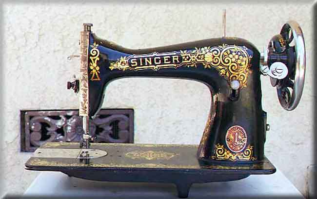

This beautiful example of the Singer Model 115 Rotary was originally made as a treadle driven machine. It has the decal set variously known as the "Tiffany" or "Gingerbread" pattern (see Detail of Bed Decal and Rear View below).
The 115 has a full rotary hook mechanism (see Shuttle Detail below). The faceplate shows very strong similarity to the Singer Model 15 which was made in much greater numbers, and the 115 is often confused with it (see Face Plate Detail below).
